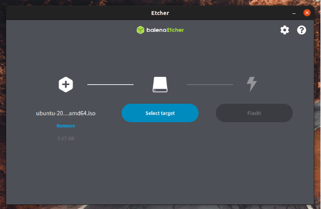

Probar y preparar la instalación
Copia de seguridad, USB de instalación y cómo arrancar el ordenador desde él, sin riesgos.
Probar y preparar la instalación
🧰 Antes de tocar nada
Instalar un sistema operativo es una operación seria: puede borrar datos. Con un poco de preparación no hay ningún peligro. Sigue siempre este orden.
Probar Ubuntu sin instalarlo
El USB de instalación sirve también para probar Ubuntu en directo: el sistema se ejecuta desde el USB y tus datos están a salvo, porque no se guarda ningún cambio permanente en el ordenador. Es la mejor manera de comprobar que el wifi, el sonido y la pantalla funcionan antes de decidir.
- 🔌 Desde el USB (modo «probar»): el que usarás en este curso. No cambia nada en el disco.
- 🧱 En una máquina virtual: Ubuntu funciona dentro de una ventana de tu Windows (por ejemplo con VirtualBox). Perfecto para practicar.
- 🪟 WSL (Windows Subsystem for Linux): para usar herramientas y la terminal de Ubuntu dentro de Windows, sin instalar el escritorio completo.
Crear el USB de instalación
Copiar el archivo ISO al USB no funciona: hay que «grabar» la imagen con un programa especial. El tutorial oficial usa balenaEtcher, que existe para Windows, macOS y Linux. Necesitas un USB de al menos 8 GB (el tutorial de instalación recomienda 12 GB o más).
- Descarga e instala balenaEtcher (versión para tu sistema).
- Abre el programa y pulsa Flash from file (Seleccionar archivo) para elegir la ISO de Ubuntu que descargaste.
- Elige tu unidad USB en «Select target» y comprueba que es la correcta.
- Pulsa Flash! y espera a que termine.

Captura realbalenaEtcher con la imagen de Ubuntu ya elegida. Fuente: tutorial oficial de Canonical «Install Ubuntu Desktop» (ubuntu.com/tutorials) (6 de octubre de 2026). El aspecto puede cambiar con el tiempo.
Arrancar desde el USB
Con el USB puesto, enciende o reinicia el ordenador. Normalmente reconoce solo el USB. Si no lo hace, pulsa una tecla al arrancar para abrir el menú de arranque:
🧩 Lo primero
Vas a instalar Ubuntu en tu portátil de siempre. ¿Qué haces antes de nada?
🧩 Crear el USB
¿Cómo se crea un USB de instalación de Ubuntu?
🧩 Menú de arranque
El ordenador arranca con Windows en vez de con el USB. ¿Qué pruebas?